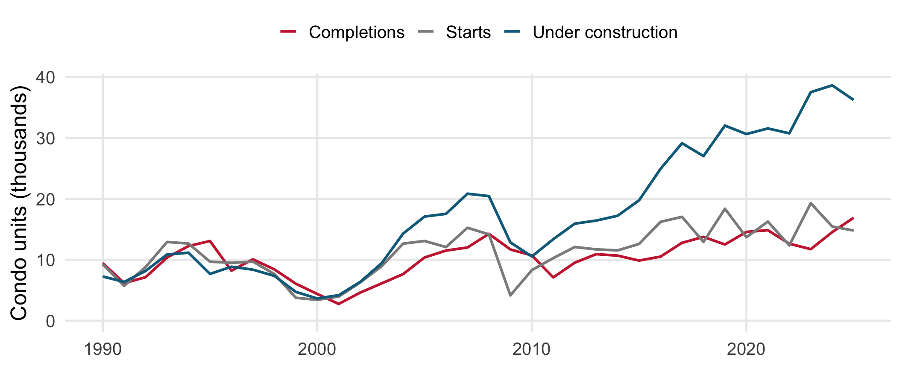
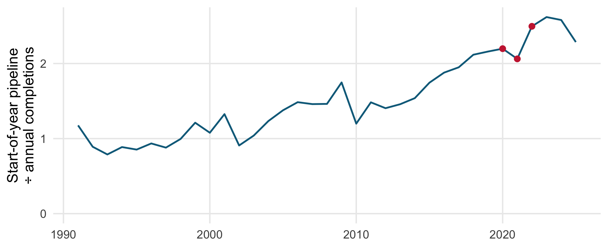
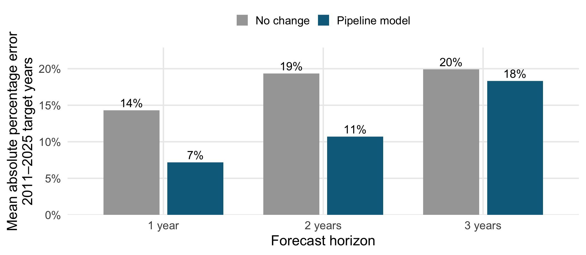
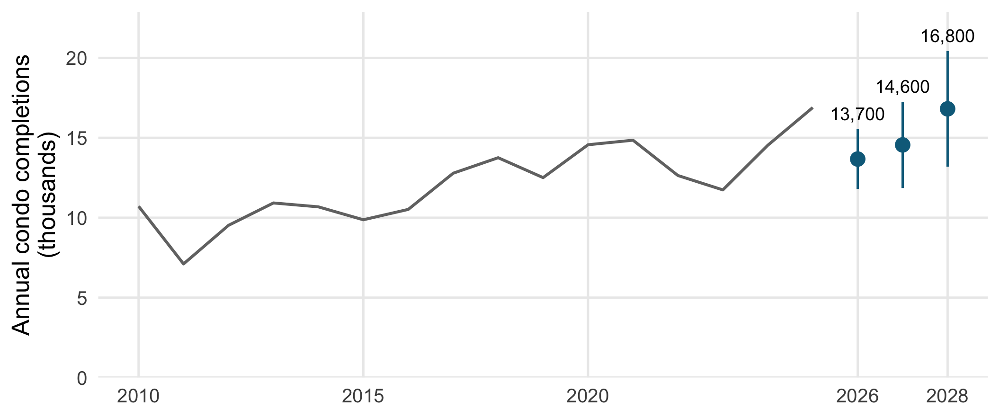
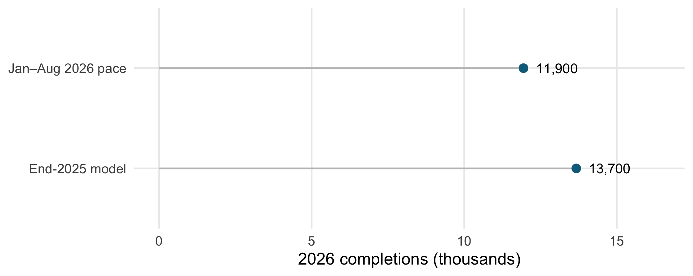

library(tidyverse)library(fixest)theme_set(theme_minimal(base_size =19) +theme(legend.position ="top", legend.title =element_blank(),panel.grid.minor =element_blank()))series_colours <-c("Starts"="grey55", "Completions"="#c9283e","Under construction"="#0b6b8a")# Keep the October 2026 vintage fixed. This is a dated forecasting example,# not a live forecast that refreshes automatically as CMHC revises its data.monthly <-read_csv("docs/example_data/vancouver_cmhc_through_2026_08.csv.gz",show_col_types =FALSE) |>filter(`Intended Market`=="Condo") |>transmute(date = Date, series = Series, units = Value)stopifnot(!anyNA(monthly$units), !anyDuplicated(select(monthly, date, series)),setequal(unique(monthly$series), c("Starts", "Completions", "Under Construction")),year(max(monthly$date)) ==2026, month(max(monthly$date)) ==8)monthly_wide <- monthly |>pivot_wider(names_from = series, values_from = units) |>arrange(date) |>mutate(year =year(date))stopifnot(!anyNA(monthly_wide),identical(monthly_wide$date, seq(min(monthly$date), max(monthly$date), by ="month")))# Annual flows are summed. Units under construction is the December stock.# Incomplete 2026 stays outside model fitting and is used as a later check.annual <- monthly_wide |>filter(n() ==12, .by = year) |>summarize(starts =sum(Starts), completions =sum(Completions),under_construction =last(`Under Construction`, order_by = date),.by = year) |>arrange(year)stopifnot(setequal(annual$year, 1990:2025))horizons <-1:3pipeline_data <-function(h) { annual |>mutate(uc_origin =lag(under_construction, h),starts_origin =lag(starts, h),starts_origin_1 =lag(starts, h +1),completions_origin =lag(completions, h))}pipeline_formula <- completions ~ uc_origin + starts_origin + starts_origin_1models <-map(horizons, \(h) {feols(pipeline_formula, pipeline_data(h), vcov =NW(h) ~ year, notes =FALSE)})# Target-year outcomes never enter the training sample. Historical values# still come from the October 2026 vintage, not from archived releases.backtest <-expand_grid(h = horizons, target =2011:2025) |>pmap(\(h, target) { d <-pipeline_data(h) train <-filter(d, year <= target - h) test <-filter(d, year == target)stopifnot(max(train$year) <= target - h, nrow(test) ==1)tibble(h, target, actual = test$completions,`Pipeline model`=as.numeric(predict(feols(pipeline_formula, train, notes =FALSE), newdata = test)),`No change`= test$completions_origin) }) |>list_rbind()errors <- backtest |>pivot_longer(-c(h, target, actual), names_to ="model", values_to ="forecast") |>mutate(error = forecast / actual -1) |>summarize(mape =mean(abs(error)), bias =mean(error), .by =c(model, h))origin <-max(annual$year)origin_values <- annual |>filter(year == origin) |>transmute(uc_origin = under_construction, starts_origin = starts,starts_origin_1 = annual$starts[annual$year == origin -1])# Conventional regression prediction intervals are conditional on the fitted# specification. They do not include model selection or structural change.forecast <-map(horizons, \(h) {predict(models[[h]], newdata = origin_values, interval ="prediction", level =0.8) |>mutate(year = origin + h)}) |>list_rbind() |>select(year, forecast = fit, low = ci_low, high = ci_high)stopifnot(all(is.finite(forecast$forecast)), all(forecast$low < forecast$high))turnover <- annual |>mutate(ratio =lag(under_construction) / completions) |>filter(!is.na(ratio))ytd_end <-max(monthly$date)ytd <-sum(monthly$units[monthly$series =="Completions"&year(monthly$date) ==2026])past_ytd_share <- monthly |>filter(series =="Completions", year(date) %in%2011:2025) |>mutate(year =year(date)) |>summarize(share =sum(units[month(date) <=month(ytd_end)]) /sum(units),.by = year)ytd_range <-tibble(low = ytd /max(past_ytd_share$share),mid = ytd /median(past_ytd_share$share),high = ytd /min(past_ytd_share$share))forecast_2026 <-filter(forecast, year ==2026)$forecastrequired_final_share <-1- ytd / forecast_2026number <- scales::label_comma(accuracy =100)
The construction pipeline improves one- and two-year completion forecasts over a no-change benchmark. Its advantage is small three years ahead.
Question: How much does today’s pipeline tell us about the condos arriving in the next three years?
Why care? Units under construction are future supply, but their delivery dates matter for housing-market decisions.
Pipeline growth outpaced completions
Code
library(tidyverse)library(fixest)theme_set(theme_minimal(base_size =19) +theme(legend.position ="top", legend.title =element_blank(),panel.grid.minor =element_blank()))series_colours <-c("Starts"="grey55", "Completions"="#c9283e","Under construction"="#0b6b8a")# Keep the October 2026 vintage fixed. This is a dated forecasting example,# not a live forecast that refreshes automatically as CMHC revises its data.monthly <-read_csv("docs/example_data/vancouver_cmhc_through_2026_08.csv.gz",show_col_types =FALSE) |>filter(`Intended Market`=="Condo") |>transmute(date = Date, series = Series, units = Value)stopifnot(!anyNA(monthly$units), !anyDuplicated(select(monthly, date, series)),setequal(unique(monthly$series), c("Starts", "Completions", "Under Construction")),year(max(monthly$date)) ==2026, month(max(monthly$date)) ==8)monthly_wide <- monthly |>pivot_wider(names_from = series, values_from = units) |>arrange(date) |>mutate(year =year(date))stopifnot(!anyNA(monthly_wide),identical(monthly_wide$date, seq(min(monthly$date), max(monthly$date), by ="month")))# Annual flows are summed. Units under construction is the December stock.# Incomplete 2026 stays outside model fitting and is used as a later check.annual <- monthly_wide |>filter(n() ==12, .by = year) |>summarize(starts =sum(Starts), completions =sum(Completions),under_construction =last(`Under Construction`, order_by = date),.by = year) |>arrange(year)stopifnot(setequal(annual$year, 1990:2025))annual |>rename(Starts = starts, Completions = completions, `Under construction`= under_construction) |>pivot_longer(-year, names_to ="series", values_to ="units") |>ggplot(aes(year, units /1000, colour = series)) +geom_line(linewidth =1.1) +scale_colour_manual(values = series_colours) +scale_y_continuous(limits =c(0, NA)) +labs(x =NULL, y ="Condo units (thousands)")

Since 2010: under construction ×3.4, annual completions ×1.6.
More pipeline per annual completion
Code
library(tidyverse)library(fixest)theme_set(theme_minimal(base_size =19) +theme(legend.position ="top", legend.title =element_blank(),panel.grid.minor =element_blank()))series_colours <-c("Starts"="grey55", "Completions"="#c9283e","Under construction"="#0b6b8a")# Keep the October 2026 vintage fixed. This is a dated forecasting example,# not a live forecast that refreshes automatically as CMHC revises its data.monthly <-read_csv("docs/example_data/vancouver_cmhc_through_2026_08.csv.gz",show_col_types =FALSE) |>filter(`Intended Market`=="Condo") |>transmute(date = Date, series = Series, units = Value)stopifnot(!anyNA(monthly$units), !anyDuplicated(select(monthly, date, series)),setequal(unique(monthly$series), c("Starts", "Completions", "Under Construction")),year(max(monthly$date)) ==2026, month(max(monthly$date)) ==8)monthly_wide <- monthly |>pivot_wider(names_from = series, values_from = units) |>arrange(date) |>mutate(year =year(date))stopifnot(!anyNA(monthly_wide),identical(monthly_wide$date, seq(min(monthly$date), max(monthly$date), by ="month")))# Annual flows are summed. Units under construction is the December stock.# Incomplete 2026 stays outside model fitting and is used as a later check.annual <- monthly_wide |>filter(n() ==12, .by = year) |>summarize(starts =sum(Starts), completions =sum(Completions),under_construction =last(`Under Construction`, order_by = date),.by = year) |>arrange(year)stopifnot(setequal(annual$year, 1990:2025))horizons <-1:3pipeline_data <-function(h) { annual |>mutate(uc_origin =lag(under_construction, h),starts_origin =lag(starts, h),starts_origin_1 =lag(starts, h +1),completions_origin =lag(completions, h))}pipeline_formula <- completions ~ uc_origin + starts_origin + starts_origin_1models <-map(horizons, \(h) {feols(pipeline_formula, pipeline_data(h), vcov =NW(h) ~ year, notes =FALSE)})# Target-year outcomes never enter the training sample. Historical values# still come from the October 2026 vintage, not from archived releases.backtest <-expand_grid(h = horizons, target =2011:2025) |>pmap(\(h, target) { d <-pipeline_data(h) train <-filter(d, year <= target - h) test <-filter(d, year == target)stopifnot(max(train$year) <= target - h, nrow(test) ==1)tibble(h, target, actual = test$completions,`Pipeline model`=as.numeric(predict(feols(pipeline_formula, train, notes =FALSE), newdata = test)),`No change`= test$completions_origin) }) |>list_rbind()errors <- backtest |>pivot_longer(-c(h, target, actual), names_to ="model", values_to ="forecast") |>mutate(error = forecast / actual -1) |>summarize(mape =mean(abs(error)), bias =mean(error), .by =c(model, h))origin <-max(annual$year)origin_values <- annual |>filter(year == origin) |>transmute(uc_origin = under_construction, starts_origin = starts,starts_origin_1 = annual$starts[annual$year == origin -1])# Conventional regression prediction intervals are conditional on the fitted# specification. They do not include model selection or structural change.forecast <-map(horizons, \(h) {predict(models[[h]], newdata = origin_values, interval ="prediction", level =0.8) |>mutate(year = origin + h)}) |>list_rbind() |>select(year, forecast = fit, low = ci_low, high = ci_high)stopifnot(all(is.finite(forecast$forecast)), all(forecast$low < forecast$high))turnover <- annual |>mutate(ratio =lag(under_construction) / completions) |>filter(!is.na(ratio))ytd_end <-max(monthly$date)ytd <-sum(monthly$units[monthly$series =="Completions"&year(monthly$date) ==2026])past_ytd_share <- monthly |>filter(series =="Completions", year(date) %in%2011:2025) |>mutate(year =year(date)) |>summarize(share =sum(units[month(date) <=month(ytd_end)]) /sum(units),.by = year)ytd_range <-tibble(low = ytd /max(past_ytd_share$share),mid = ytd /median(past_ytd_share$share),high = ytd /min(past_ytd_share$share))forecast_2026 <-filter(forecast, year ==2026)$forecastrequired_final_share <-1- ytd / forecast_2026number <- scales::label_comma(accuracy =100)ggplot(turnover, aes(year, ratio)) +geom_line(linewidth =1.1, colour ="#0b6b8a") +geom_point(data =filter(turnover, between(year, 2020, 2022)),size =3, colour ="#c9283e") +scale_y_continuous(limits =c(0, NA)) +labs(x =NULL, y ="Start-of-year pipeline\n÷ annual completions")

This ratio is a turnover proxy, not a direct observation of construction time.
Can a model beat “same as last year”?
Choice
Design
Predictors
Under construction and the last two annual starts totals, measured at the forecast origin
Model
A separate regression for each horizon, one to three years
Benchmark
Carry forward completions observed at the origin
Historical comparison
Predict 2011–2025, refitting with only earlier outcomes
Contribution: measure the improvement over a simple forecast, at each horizon.
Most of the gain is one or two years ahead
Code
library(tidyverse)library(fixest)theme_set(theme_minimal(base_size =19) +theme(legend.position ="top", legend.title =element_blank(),panel.grid.minor =element_blank()))series_colours <-c("Starts"="grey55", "Completions"="#c9283e","Under construction"="#0b6b8a")# Keep the October 2026 vintage fixed. This is a dated forecasting example,# not a live forecast that refreshes automatically as CMHC revises its data.monthly <-read_csv("docs/example_data/vancouver_cmhc_through_2026_08.csv.gz",show_col_types =FALSE) |>filter(`Intended Market`=="Condo") |>transmute(date = Date, series = Series, units = Value)stopifnot(!anyNA(monthly$units), !anyDuplicated(select(monthly, date, series)),setequal(unique(monthly$series), c("Starts", "Completions", "Under Construction")),year(max(monthly$date)) ==2026, month(max(monthly$date)) ==8)monthly_wide <- monthly |>pivot_wider(names_from = series, values_from = units) |>arrange(date) |>mutate(year =year(date))stopifnot(!anyNA(monthly_wide),identical(monthly_wide$date, seq(min(monthly$date), max(monthly$date), by ="month")))# Annual flows are summed. Units under construction is the December stock.# Incomplete 2026 stays outside model fitting and is used as a later check.annual <- monthly_wide |>filter(n() ==12, .by = year) |>summarize(starts =sum(Starts), completions =sum(Completions),under_construction =last(`Under Construction`, order_by = date),.by = year) |>arrange(year)stopifnot(setequal(annual$year, 1990:2025))horizons <-1:3pipeline_data <-function(h) { annual |>mutate(uc_origin =lag(under_construction, h),starts_origin =lag(starts, h),starts_origin_1 =lag(starts, h +1),completions_origin =lag(completions, h))}pipeline_formula <- completions ~ uc_origin + starts_origin + starts_origin_1models <-map(horizons, \(h) {feols(pipeline_formula, pipeline_data(h), vcov =NW(h) ~ year, notes =FALSE)})# Target-year outcomes never enter the training sample. Historical values# still come from the October 2026 vintage, not from archived releases.backtest <-expand_grid(h = horizons, target =2011:2025) |>pmap(\(h, target) { d <-pipeline_data(h) train <-filter(d, year <= target - h) test <-filter(d, year == target)stopifnot(max(train$year) <= target - h, nrow(test) ==1)tibble(h, target, actual = test$completions,`Pipeline model`=as.numeric(predict(feols(pipeline_formula, train, notes =FALSE), newdata = test)),`No change`= test$completions_origin) }) |>list_rbind()errors <- backtest |>pivot_longer(-c(h, target, actual), names_to ="model", values_to ="forecast") |>mutate(error = forecast / actual -1) |>summarize(mape =mean(abs(error)), bias =mean(error), .by =c(model, h))origin <-max(annual$year)origin_values <- annual |>filter(year == origin) |>transmute(uc_origin = under_construction, starts_origin = starts,starts_origin_1 = annual$starts[annual$year == origin -1])# Conventional regression prediction intervals are conditional on the fitted# specification. They do not include model selection or structural change.forecast <-map(horizons, \(h) {predict(models[[h]], newdata = origin_values, interval ="prediction", level =0.8) |>mutate(year = origin + h)}) |>list_rbind() |>select(year, forecast = fit, low = ci_low, high = ci_high)stopifnot(all(is.finite(forecast$forecast)), all(forecast$low < forecast$high))turnover <- annual |>mutate(ratio =lag(under_construction) / completions) |>filter(!is.na(ratio))ytd_end <-max(monthly$date)ytd <-sum(monthly$units[monthly$series =="Completions"&year(monthly$date) ==2026])past_ytd_share <- monthly |>filter(series =="Completions", year(date) %in%2011:2025) |>mutate(year =year(date)) |>summarize(share =sum(units[month(date) <=month(ytd_end)]) /sum(units),.by = year)ytd_range <-tibble(low = ytd /max(past_ytd_share$share),mid = ytd /median(past_ytd_share$share),high = ytd /min(past_ytd_share$share))forecast_2026 <-filter(forecast, year ==2026)$forecastrequired_final_share <-1- ytd / forecast_2026number <- scales::label_comma(accuracy =100)errors |>mutate(horizon =factor(h, labels =c("1 year", "2 years", "3 years"))) |>ggplot(aes(horizon, mape, fill = model)) +geom_col(position =position_dodge(width =0.8), width =0.7) +geom_text(aes(label = scales::percent(mape, accuracy =1)),position =position_dodge(width =0.8), vjust =-0.4, size =5.5) +scale_fill_manual(values =c("Pipeline model"="#0b6b8a", "No change"="grey65")) +scale_y_continuous(labels = scales::label_percent(), expand =expansion(mult =c(0, 0.15))) +labs(x ="Forecast horizon", y ="Mean absolute percentage error\n2011–2025 target years")

Model projections through 2028
Code
library(tidyverse)library(fixest)theme_set(theme_minimal(base_size =19) +theme(legend.position ="top", legend.title =element_blank(),panel.grid.minor =element_blank()))series_colours <-c("Starts"="grey55", "Completions"="#c9283e","Under construction"="#0b6b8a")# Keep the October 2026 vintage fixed. This is a dated forecasting example,# not a live forecast that refreshes automatically as CMHC revises its data.monthly <-read_csv("docs/example_data/vancouver_cmhc_through_2026_08.csv.gz",show_col_types =FALSE) |>filter(`Intended Market`=="Condo") |>transmute(date = Date, series = Series, units = Value)stopifnot(!anyNA(monthly$units), !anyDuplicated(select(monthly, date, series)),setequal(unique(monthly$series), c("Starts", "Completions", "Under Construction")),year(max(monthly$date)) ==2026, month(max(monthly$date)) ==8)monthly_wide <- monthly |>pivot_wider(names_from = series, values_from = units) |>arrange(date) |>mutate(year =year(date))stopifnot(!anyNA(monthly_wide),identical(monthly_wide$date, seq(min(monthly$date), max(monthly$date), by ="month")))# Annual flows are summed. Units under construction is the December stock.# Incomplete 2026 stays outside model fitting and is used as a later check.annual <- monthly_wide |>filter(n() ==12, .by = year) |>summarize(starts =sum(Starts), completions =sum(Completions),under_construction =last(`Under Construction`, order_by = date),.by = year) |>arrange(year)stopifnot(setequal(annual$year, 1990:2025))horizons <-1:3pipeline_data <-function(h) { annual |>mutate(uc_origin =lag(under_construction, h),starts_origin =lag(starts, h),starts_origin_1 =lag(starts, h +1),completions_origin =lag(completions, h))}pipeline_formula <- completions ~ uc_origin + starts_origin + starts_origin_1models <-map(horizons, \(h) {feols(pipeline_formula, pipeline_data(h), vcov =NW(h) ~ year, notes =FALSE)})# Target-year outcomes never enter the training sample. Historical values# still come from the October 2026 vintage, not from archived releases.backtest <-expand_grid(h = horizons, target =2011:2025) |>pmap(\(h, target) { d <-pipeline_data(h) train <-filter(d, year <= target - h) test <-filter(d, year == target)stopifnot(max(train$year) <= target - h, nrow(test) ==1)tibble(h, target, actual = test$completions,`Pipeline model`=as.numeric(predict(feols(pipeline_formula, train, notes =FALSE), newdata = test)),`No change`= test$completions_origin) }) |>list_rbind()errors <- backtest |>pivot_longer(-c(h, target, actual), names_to ="model", values_to ="forecast") |>mutate(error = forecast / actual -1) |>summarize(mape =mean(abs(error)), bias =mean(error), .by =c(model, h))origin <-max(annual$year)origin_values <- annual |>filter(year == origin) |>transmute(uc_origin = under_construction, starts_origin = starts,starts_origin_1 = annual$starts[annual$year == origin -1])# Conventional regression prediction intervals are conditional on the fitted# specification. They do not include model selection or structural change.forecast <-map(horizons, \(h) {predict(models[[h]], newdata = origin_values, interval ="prediction", level =0.8) |>mutate(year = origin + h)}) |>list_rbind() |>select(year, forecast = fit, low = ci_low, high = ci_high)stopifnot(all(is.finite(forecast$forecast)), all(forecast$low < forecast$high))turnover <- annual |>mutate(ratio =lag(under_construction) / completions) |>filter(!is.na(ratio))ytd_end <-max(monthly$date)ytd <-sum(monthly$units[monthly$series =="Completions"&year(monthly$date) ==2026])past_ytd_share <- monthly |>filter(series =="Completions", year(date) %in%2011:2025) |>mutate(year =year(date)) |>summarize(share =sum(units[month(date) <=month(ytd_end)]) /sum(units),.by = year)ytd_range <-tibble(low = ytd /max(past_ytd_share$share),mid = ytd /median(past_ytd_share$share),high = ytd /min(past_ytd_share$share))forecast_2026 <-filter(forecast, year ==2026)$forecastrequired_final_share <-1- ytd / forecast_2026number <- scales::label_comma(accuracy =100)ggplot(filter(annual, year >=2010), aes(year, completions /1000)) +geom_line(colour ="grey45", linewidth =1.1) +geom_pointrange(data = forecast,aes(year, forecast /1000, ymin = low /1000, ymax = high /1000),colour ="#0b6b8a", linewidth =0.9, inherit.aes =FALSE) +geom_text(data = forecast, aes(year, high /1000, label =number(forecast)),vjust =-0.7, size =5, inherit.aes =FALSE) +scale_x_continuous(breaks =c(2010, 2015, 2020, 2026, 2028)) +scale_y_continuous(limits =c(0, NA), expand =expansion(mult =c(0, 0.12))) +labs(x =NULL, y ="Annual condo completions\n(thousands)")

Blue: end-2025 model projections with conditional 80% prediction intervals.
Newer evidence points below the 2026 forecast
Code
library(tidyverse)library(fixest)theme_set(theme_minimal(base_size =19) +theme(legend.position ="top", legend.title =element_blank(),panel.grid.minor =element_blank()))series_colours <-c("Starts"="grey55", "Completions"="#c9283e","Under construction"="#0b6b8a")# Keep the October 2026 vintage fixed. This is a dated forecasting example,# not a live forecast that refreshes automatically as CMHC revises its data.monthly <-read_csv("docs/example_data/vancouver_cmhc_through_2026_08.csv.gz",show_col_types =FALSE) |>filter(`Intended Market`=="Condo") |>transmute(date = Date, series = Series, units = Value)stopifnot(!anyNA(monthly$units), !anyDuplicated(select(monthly, date, series)),setequal(unique(monthly$series), c("Starts", "Completions", "Under Construction")),year(max(monthly$date)) ==2026, month(max(monthly$date)) ==8)monthly_wide <- monthly |>pivot_wider(names_from = series, values_from = units) |>arrange(date) |>mutate(year =year(date))stopifnot(!anyNA(monthly_wide),identical(monthly_wide$date, seq(min(monthly$date), max(monthly$date), by ="month")))# Annual flows are summed. Units under construction is the December stock.# Incomplete 2026 stays outside model fitting and is used as a later check.annual <- monthly_wide |>filter(n() ==12, .by = year) |>summarize(starts =sum(Starts), completions =sum(Completions),under_construction =last(`Under Construction`, order_by = date),.by = year) |>arrange(year)stopifnot(setequal(annual$year, 1990:2025))horizons <-1:3pipeline_data <-function(h) { annual |>mutate(uc_origin =lag(under_construction, h),starts_origin =lag(starts, h),starts_origin_1 =lag(starts, h +1),completions_origin =lag(completions, h))}pipeline_formula <- completions ~ uc_origin + starts_origin + starts_origin_1models <-map(horizons, \(h) {feols(pipeline_formula, pipeline_data(h), vcov =NW(h) ~ year, notes =FALSE)})# Target-year outcomes never enter the training sample. Historical values# still come from the October 2026 vintage, not from archived releases.backtest <-expand_grid(h = horizons, target =2011:2025) |>pmap(\(h, target) { d <-pipeline_data(h) train <-filter(d, year <= target - h) test <-filter(d, year == target)stopifnot(max(train$year) <= target - h, nrow(test) ==1)tibble(h, target, actual = test$completions,`Pipeline model`=as.numeric(predict(feols(pipeline_formula, train, notes =FALSE), newdata = test)),`No change`= test$completions_origin) }) |>list_rbind()errors <- backtest |>pivot_longer(-c(h, target, actual), names_to ="model", values_to ="forecast") |>mutate(error = forecast / actual -1) |>summarize(mape =mean(abs(error)), bias =mean(error), .by =c(model, h))origin <-max(annual$year)origin_values <- annual |>filter(year == origin) |>transmute(uc_origin = under_construction, starts_origin = starts,starts_origin_1 = annual$starts[annual$year == origin -1])# Conventional regression prediction intervals are conditional on the fitted# specification. They do not include model selection or structural change.forecast <-map(horizons, \(h) {predict(models[[h]], newdata = origin_values, interval ="prediction", level =0.8) |>mutate(year = origin + h)}) |>list_rbind() |>select(year, forecast = fit, low = ci_low, high = ci_high)stopifnot(all(is.finite(forecast$forecast)), all(forecast$low < forecast$high))turnover <- annual |>mutate(ratio =lag(under_construction) / completions) |>filter(!is.na(ratio))ytd_end <-max(monthly$date)ytd <-sum(monthly$units[monthly$series =="Completions"&year(monthly$date) ==2026])past_ytd_share <- monthly |>filter(series =="Completions", year(date) %in%2011:2025) |>mutate(year =year(date)) |>summarize(share =sum(units[month(date) <=month(ytd_end)]) /sum(units),.by = year)ytd_range <-tibble(low = ytd /max(past_ytd_share$share),mid = ytd /median(past_ytd_share$share),high = ytd /min(past_ytd_share$share))forecast_2026 <-filter(forecast, year ==2026)$forecastrequired_final_share <-1- ytd / forecast_2026number <- scales::label_comma(accuracy =100)tibble(estimate =c("End-2025 model", "Jan–Aug 2026 pace"),value =c(forecast_2026, ytd_range$mid)) |>ggplot(aes(value /1000, estimate)) +geom_segment(aes(x =0, xend = value /1000, yend = estimate), colour ="grey75") +geom_point(size =4, colour ="#0b6b8a") +geom_text(aes(label =number(value)), hjust =-0.3, size =5.5) +scale_x_continuous(limits =c(0, max(forecast_2026, ytd_range$mid) /1000*1.2)) +labs(x ="2026 completions (thousands)", y =NULL)

7,894 completions through August imply about 11,900 for 2026 using the historical median seasonal share.
Takeaways
A larger construction pipeline is informative about future supply, but its size alone does not specify delivery dates.
The pipeline model improves the historical benchmark most at one- and two-year horizons.
Later evidence and the three-year overprediction pattern qualify the projections. A useful forecast should be open to revision.
Backup: Sources
CMHC, Housing Supply Report, April 2023, Vancouver section, pp. 15–16: new starts and longer construction times both contributed to the growing pipeline.
CMHC, Housing Market Information Portal: Vancouver CMA (59933), monthly Starts and Completions Survey by intended market. Accessed through the cmhc R package on October 15, 2026.